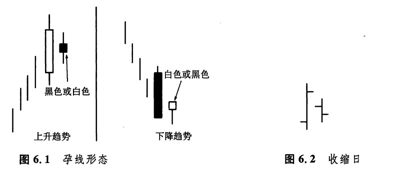
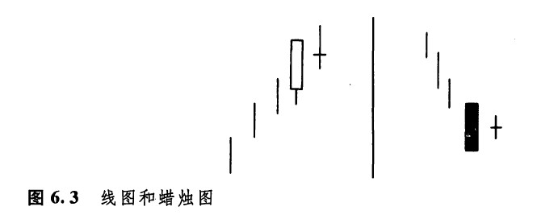
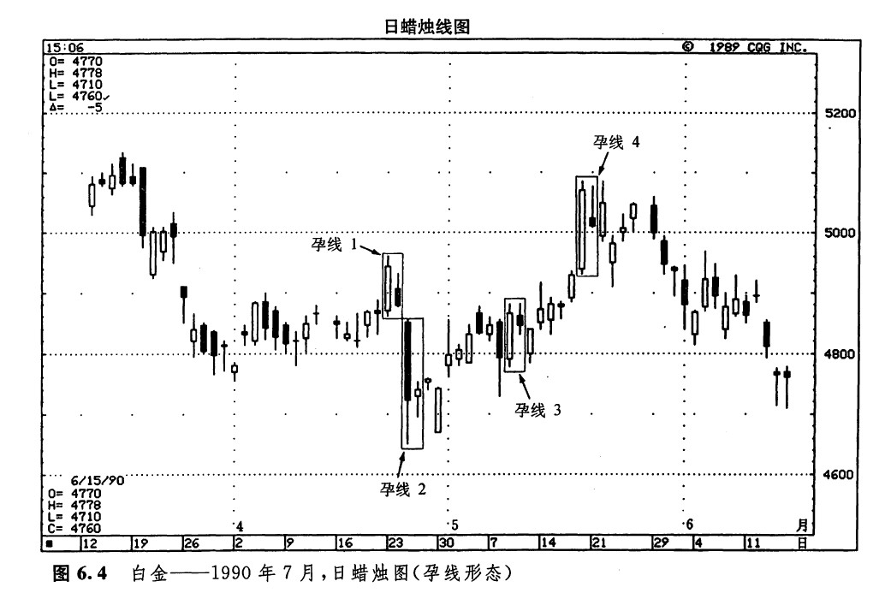
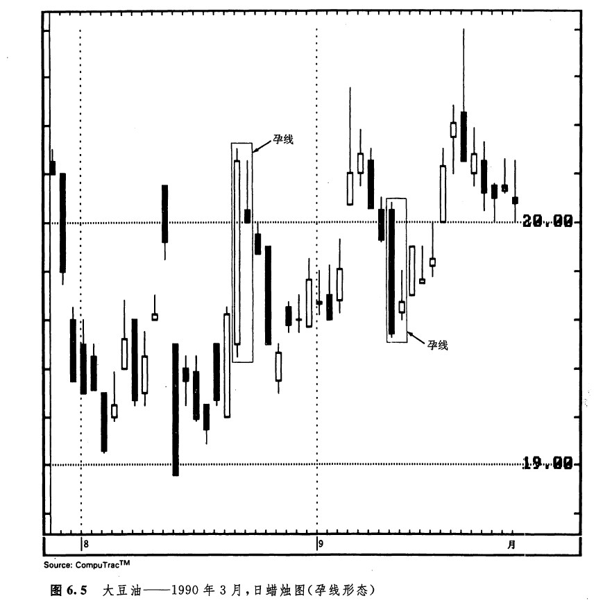
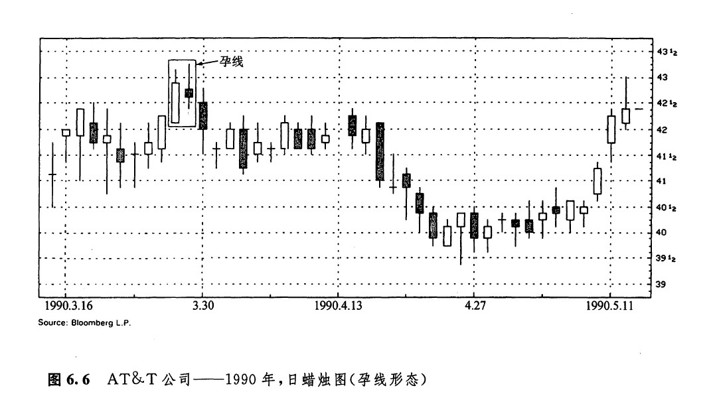
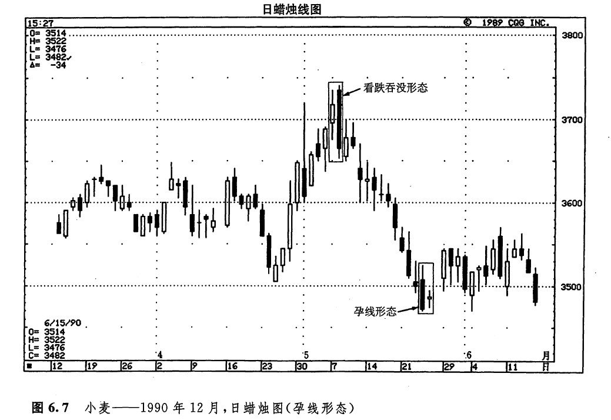
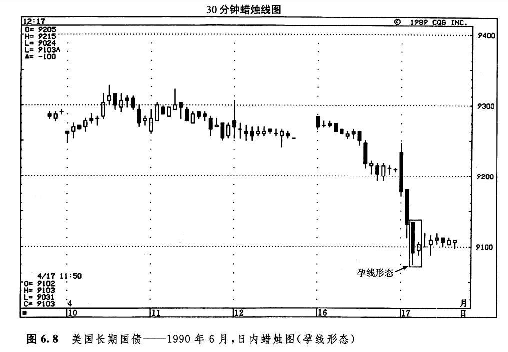
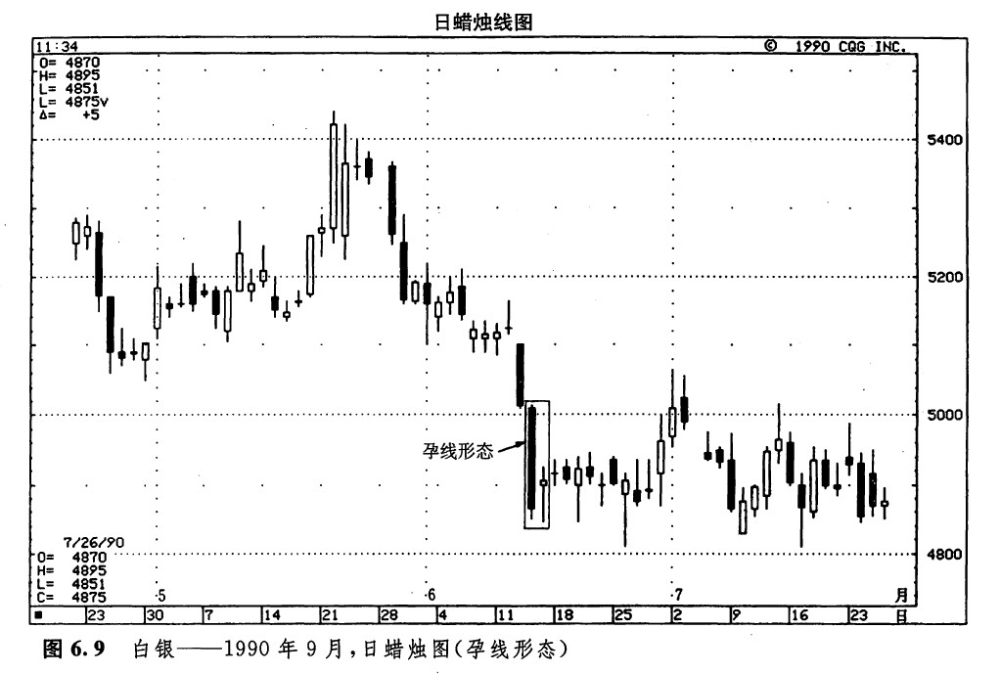

如图6.1所示即孕线形态，其中后一根蜡烛线的实体较小，并且被前一根相对较长的实体包容进去。本形态的名字来自一个古老的日本名词，意思就是“怀孕”。在本形态中，长的蜡烛线是“母”蜡烛线，而小的蜡烛线则是“子”或“胎”蜡烛线。在第三章，我们曾交代过，纺锤线（即具有小实体的蜡烛线）在某些形态中很有用处。孕线形态就是这些形态的一个例子（星线也是一个例子，这在第五章已有探讨）。孕线形态与吞没形态相比，两根蜡烛线的顺序恰好颠倒过来。
在吞没形态中，后面是一根长长的实体，它将前一个小实体覆盖进去了。而在孕线形态中，前一个是非常长的实体，它将后一个小实体包容起来。在吞没形态中，两根蜡烛线的实体的颜色应当互不相同。而在孕线形态中，这一点倒不是一项必要条件。无论如何，最终您会发现，在绝大多数情况下，孕线形态的两个实体的颜色也是不同的。图6.7显示了吞没形态与孕线形态之间的区别。
孕线形态与西方技术分析理论中的收缩日概念有相似之处。按照西方的理论，如果某日最高价和最低价均居于前一日价格区间的内部，则这一天就是一个收缩日（如图6.2所示）。但是，西方技术分析理论认为，收缩日通常没有什么预测意义。而在蜡烛图理论中，孕线形态的出现，预示着市场将同先前的趋势分道扬镰。另一方面，西方的收缩日概念仅要求当日的最高点和最低点都处在前一时间段的区间之内，而孕线形态则不仅要求当日的开市价与收市价均处于前一日的较宽的开市价与收市价的范围之内（即前一日是一个较高的实体），而且要求当日的开市价与收市价之间的距离比较小（即这一天是一根较小的实体）。

与其他一些反转形态相比，比如说锤子线、上吊线或吞没形态等，孕线形态所构成的反转信号通常不如它们重要。当孕线形态出现时，好象市场的刹车踏板被踩了下去，于是当前的市场趋势就结束了，然后，市场常常转入平静状态。有的时候，孕线形态也可能构成重大趋势变化的警告信号——尤其是在它处于市场顶部的情况下。
图6.3所示的是一类特别的孕线形态，称为十字孕线形态。所谓十字孕线形态，指的是在孕线形态中，第二天是一根十字线，而不是一个小实体。因为十字孕线形态包含了一根强有力的十字蜡烛线（第八章将更详尽地讨论十字线），所以这类形态被视为主要反转信号。十字孕线形态有时也称为呆滞形态。

如图6.1所示，在孕线形态中，第二根蜡烛线的颜色是无所谓的。这种形态的决定性特征是，第二个时间单位的实体相对于第一个时间单位的实体是非常小的，并且这个小实体居于大实体内部。无论在一般的孕线形态中，还是在十字孕线形态中，上下影线的大小通常是无关紧要的。
孕线形态揭示了市场在其前后健康状况的明显反差。在牛市行情中，孕线形态的前一个长长的白色实体表明，市场本来充满了活力，但是，后一个小小的实体却反映出市场犹疑不定。这说明牛方向上的推动力正在衰退。由此看来，有可能发生趋势反转。在熊市行情中，孕线形态的前一根长长的黑色蜡烛线反映了沉重的抛售压力，但是，随后的小实体却表明市场踌躇不前。第二天的小实体是个警告信号，说明熊方的力量正在减弱，因此，本形态可能构成趋势反转信号。
如图6.4所示，从4月18日开始，有一段小规模的上涨行情。孕线形态1结束了这段行情。从孕线形态1开始，市场形成了一轮抛售行情，孕线形态2又阻止了这轮下跌过程。孕线形态3表明，即使在孕线形态出现前市场并无明显的趋势，孕线形态也可能具有一定的参考价值。请注意，5月的头几天，市场并无明显的趋势可循。就在这个时候，孕线形态3出现了。它的第一天是一根长长的白色实体，第二天是一根小小的黑色实体（请记住，第二天实体的颜色是无关宏旨的）。

根据这个形态发出的信号，交易商依然可以得出这样的判断：由第一天坚挺的白色实体所代表的上涨行情已经归于失败。此时此刻，市场正处在上下两难的状态下。当市场收市于孕线形态3的高点以上时，才从这种犹疑状态中解脱出来；只有在市场解脱出来之后，我们才能做出买进的建议。
孕线形态4是一个经典的实例。在本形态的高高的白色实体之前，市场呈现出明显的上升趋势。当次日的小实体形成后，这个孕线形态就完成了。此外，这个小实体还具有另一方面的疲弱意义：这是一根流星线（虽然它不是一个完美的星线，因为它的实体不在前一个实体的上方）。
如图6.5所示，是两个十分典型的孕线形态实例。在这两个孕线形态中，第二日的短实体与第一日长实体相比都是微不足道的。第一个孕线形态的出现，说明市场缺乏上升的动力；第二个孕线形态的出现，意味着市场上抛售压力的枯竭。

如图6.6所示，3月下旬出现了一个二蜡烛线的孕线形态，请看它是如何标志着市场顶部的到来的。随后形成的抛售行情一直持续到4月24日的看涨锤子线为止。请注意，在这个孕线形态中，第二天的影线已经超出了第一天实体的范围。这一实例证明，在孕线形态中，两个实体的相对大小是至关重要的，而它们的影线的相互关系，则无须深究。

如图6.7所示，在5月7日和8日组成的看跌吞没形态之后，市场形成了一轮剧烈的下跌行情。后来，本图所示的孕线形态标志着市场从下降趋势向横向区间的转化。

如图6.8所示，日内交易商可以利用这一孕线形态的技术信号，判断之前的日内规模的下降趋势可能已经结束了。如果据此采取恰当的交易措施，则可以获得一定的回报。在本实例中，4月17日早晨，市场经历了一段陡峭的下滑，在这个孕线形态出现后，这段跌势就此罢休，市场转入平缓的状态。日内交易者或许可以凭着这个孕线形态的信号平回空头头寸。本例的孕线形态并不排除市场再度恢复为下降趋势的可能性，这一点与任何底部反转形态都是一致的。无论如何，这个孕线形态确实揭示了当前的市场状态；具体地说，该形态告诉我们，至少在它出现的这个时刻，市场上向下的压力已经消退了。

图6.9所示是个很好的实例，它说明在图示的孕线形态出现后，市场从急剧的下降趋势转化为水平延伸的交易区间。在这个孕线形态之前的下跌过程中，市场价格从5.40美元狂需到4.85美元。我们看到该孕线形态如中流砾柱，堵住了这场暴跌。话说回来，孕线形态的出现未必一定预示着市场的上涨。在孕线形态出现后，市场通常缓和下来，转化为横向整理区间。

下一篇：十字孕线形态
上一篇：第六章 其他反转形态